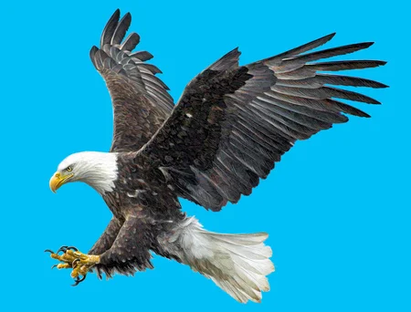

Animales aereos
Los animales aéreos son aquellos que tienen la capacidad de volar y desplazarse por el aire. Esto no significa que vivan en este elemento sino que, combinan varios medios y territorios para desarrollarse y subsistir, pudiendo dormir y buscar alimento en la tierra y en el agua y desplazándose por el aire, por ejemplo
El desarrollo de esta habilidad se debe a sus alas, que son unas extremidades o apéndices que salen de su cuerpo y las cuales, a través de su movimiento les permiten volar. Todos los animales voladores tienen alas, aunque no todas son iguales, pudiendo presentar diferentes formas y estructuras, según el tipo de animal aéreo del que estemos hablando.
Biografias de animales aereos
Paloma

Perico

Colibri